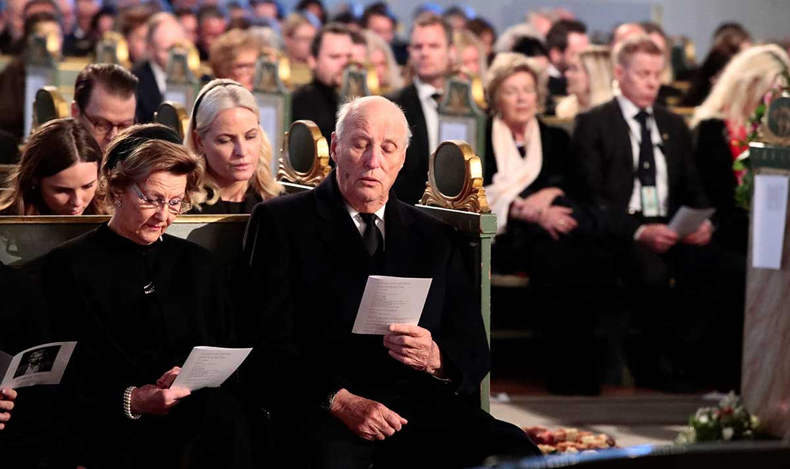

Title
Death at Funeral
Actors
Chris Rock, Martin Lawrence, Danny Glover, Regina Hall, Peter Dinklage, James Marsden, Tracy Morgan, Loretta Devine, Zoë Saldaña, Columbus Short, Luke Wilson, Keith David, Ron Glass and Kevin Hart.
The film was released in the United States on April 16, 2010.
Synopsis
A funeral service is held for the father of Aaron and Ryan. Aaron, the older son, and his wife Michelle live at his parents' home. Aaron and Michelle have been trying to buy their own home and have children but have been unsuccessful. Aaron envies his brother because Ryan is a successful author, while Aaron has not yet had his novel published, and resents him because Ryan would rather spend money on a first class airline ticket than help him pay for the funeral expenses. Aaron and Ryan's cousin Elaine and her fiancé Oscar are on their way to pick up Elaine's brother Jeff before heading to the funeral. To ease Oscar's nerves, she gives him a pill from a bottle labeled as Valium. Jeff later reveals to Elaine that it is a powerful hallucinogenic drug he has concocted for a friend. Chaos ensues when Oscar hallucinates that the coffin is moving. He knocks it over, and the body falls out of the coffin. Aaron is approached by an unknown guest named Frank, who reveals himself to be the secret lover of his late father. Frank shows Aaron photos as proof and threatens to reveal them to Aaron and Ryan's mother Cynthia unless he is paid $30,000. While in shock, Aaron relays the situation to Ryan, who suggests Aaron to pay the money because Ryan claims that he is in debt. When Aaron and Ryan meet with Frank to pay him, Frank starts to deride Aaron's ability as a writer and Aaron refuses to pay. Frank turns violent, but Aaron and Ryan subdue him, tying him up to prevent him from leaving. Family friend Norman enters the room, giving Frank several doses of what he also believes is Valium to try to calm him down. Jeff also enters the room, telling them that it is the same hallucinogen Oscar took earlier.
Age Restriction
16
